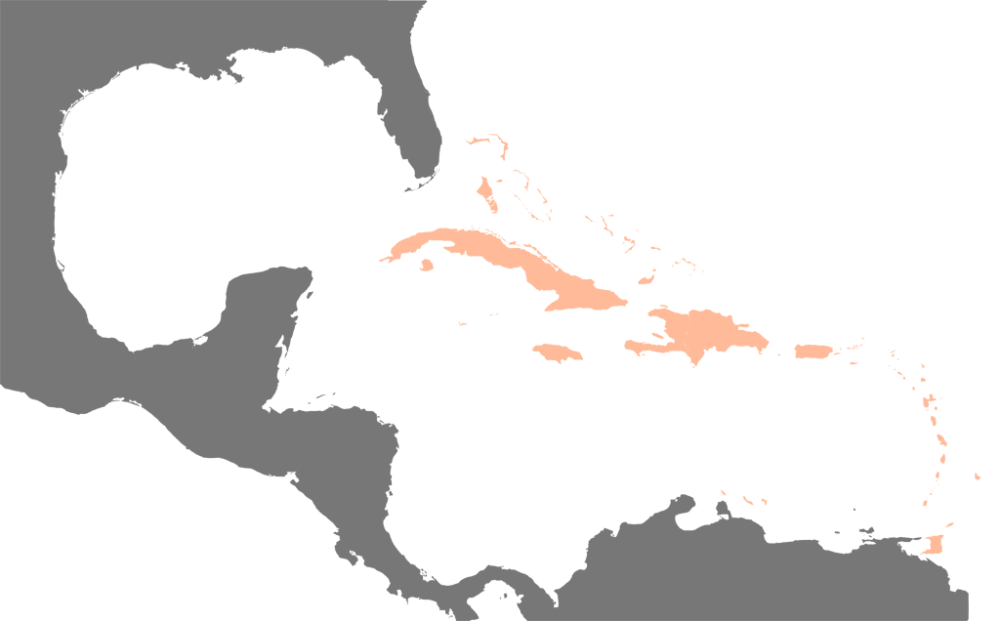
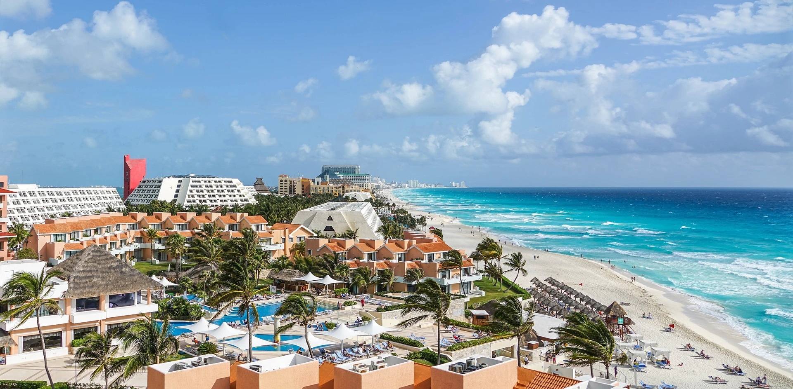

Auf den Punkt
Das Amerikanische Mittelmeer ist ein westliches Nebenmeer des Atlantischen Ozeans. Es besteht aus dem Karibischen Meer (südöstlicher Teil) und dem Golf von Mexiko (nordwestlicher Teil). Das Meer ist ein Teil der Region Mittelamerika. Die tiefste Stelle liegt im Kaimangraben, sie misst 7680 m.
Ozean Part 1
Das Meeresgebiet hat eine Fläche von knapp 4,4 Mio. km² (Karibisches Meer 2,75 Mio. km² + Golf von Mexiko 1,6 Mio km²).
Die Bezeichnung als American Mediterranean Sea bezieht sich auf die Lage als Mittelmeer zwischen den beiden Kontinenten Nord- und Südamerika (Konzept „beide Amerikas“). Würde man Amerika als einen zusammenhängenden Kontinent verstehen, läge jedoch kein interkontinentales Mittelmeer im Sinne des Begriffs vor, sondern ein gewöhnliches Randmeer des Atlantiks.
Ozean Part 2
Der Name entstand in Anlehnung an das „europäische“ Mittelmeer. Mit diesem hat es weder hydrographisch noch klimatisch sonderliche Ähnlichkeiten. Vorgeschlagen wurde aus diesem Grund auch die „ozeanographisch korrektere“ Bezeichnung Central American Sea ‚Zentralamerikanisches Meer‘.Es spielt aber besonders für Nordamerika eine ähnelnde historisch-kulturelle Rolle (alte autochthone Hochkulturen, Ausgang der romanischsprachigen Kolonialisation, touristische Gunstlagen). Darum ist der Ausdruck durchaus üblich. Auch erdgeschichtlich bestehen Parallelen, beide Meeresgebiete sind älter als der freie Atlantik, und haben vor Öffnung des Mittelatlantischen Grabenbruchs in Pangaea aneinandergegrenzt.
Ozean Part 3
Die Festlandgrenzen bilden im Norden die Südküste der Vereinigten Staaten, im Westen die Ostküste Zentralamerikas und im Süden die Nordküste Südamerikas. Florida und der Bogen der Antillen bilden die Grenze im Osten, zum freien Nordatlantik.
Ozean Part 4
Das Karibische Meer bildet einen zentralen Bereich für viele Hurrikane innerhalb der westlichen Hemisphäre. Vor der Westküste Afrikas bilden sich (meist ab dem Spätsommer) eine Reihe von Niederdrucksystemen, und die meisten davon entwickeln sich über dem Atlantik zu tropischen Stürmen. Solch ein Sturm kann sich über dem warmen Wasser (mindestens 26,5°C) zu einem tropischen Wirbelsturm mit einer Windgeschwindigkeit von mehr als 118 km/h (64 Knoten) entwickeln, der in der Karibik dann Hurrikan genannt wird.
Auf den Punkt Part 2
Die karibische Hurrikansaison dauert von Juni bis Dezember, wobei in den Monaten August und September die meisten Stürme auftreten. Im Durchschnitt bilden sich jedes Jahr neun tropische Stürme, von denen fünf die Stärke eines Hurrikan erreichen.